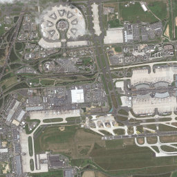

Apache Spatial Information System (SIS) version 1.4
contains a Cloud Optimized GeoTIFF (COG) reader for raster data.
The development branch of Apache SIS 1.5 (not yet released at the time of writing this blog) contains also a GeoTIFF writer.
Those reader and writer are implemented in pure Java code for avoiding the difficulty of bindings to native libraries such as GDAL.
Pure Java code also provides more flexibility for Java developers. For example, the Apache SIS reader
accepts any implementation of the Java ReadableByteChannel standard interface as the source of bytes.
Another reason for developing GeoTIFF reader and writer in Java was for prototyping the use of new GeoTIFF keys
that are proposed in OGC TestBed-19 — Geospatial in space.
Coding yet another GeoTIFF reader and writer seems a duplication of work,
since most of the geospatial world uses the popular GDAL library for that purpose.
But actually, from Apache SIS perspective, there is not so much duplication.
The most difficult part in a GeoTIFF reader and writer is to handle tiling and compression efficiently.
But this task is largely format-independent, and SIS needs also to handle netCDF and other formats.
The Apache SIS library shares code internally,
thus reducing the task of GeoTIFF support to header parsing.
By contrast, GDAL is largely an aggregation of independent libraries
such as libtiff and libpng, each with their own ways to resolve common problems.
Nevertheless, coding GeoTIFF support in Java raises questions about how its performances compare to GDAL.
There is a widespread belief that Java programs are slower than their C/C++ counterpart.
In reality, it depends a lot on the kind of application and how the libraries were coded.
Differences in algorithms can play a bigger role than differences in the programming languages.
This blog will not answer that debate, because the benchmarks presented here depend a lot on native code,
either for I/O operations or for DEFLATE compression
(the latter is handled by native code in the java.util.zip standard package).
However, the benchmarks in this blog demonstrate the capability of a Java program to avoid adding overhead.
The result is that Apache SIS, at least in those benchmarks, compares favorably with GDAL.
The benchmarks reported in this blog are very limited and only scratch the surface on the topic of raster data handling:
Sub-regions and requests for reduced resolutions on COG images should be handled efficiently by Apache SIS, but benchmarking those features would have required a more complex setup, especially if we want to test in a cloud environment. The simple benchmarks in this blog used a single image which was always read fully, from a local file on a laptop. The image was a single non-COG raster with the following properties:
| Raster thumbnail | Raster properties | ||||||||||||||||||
|---|---|---|---|---|---|---|---|---|---|---|---|---|---|---|---|---|---|---|---|
|  |
|
The image was read and rewritten using three libraries: gdal_translate, Java Image I/O and Apache SIS.
For each library, the read/write operations were repeated 10 times in order to allow the Java Virtual Machine to warmup.
The two first iterations were ignored, and execution time of the remaining 8 iterations were recorded.
Average times and standard deviations are reported in this blog.
In the particular case of the GDAL library, the execution time of gdalinfo
has also been measured and its average value has been subtracted from all gdal_translate times.
The intend is to take in account the time needed for loading the GDAL binary,
or at least the parts required for reading the image header
(it also incidentally includes the time for parsing that header).
We apply this correction because our benchmark code relaunches the GDAL command in each iteration,
contrarily to Image I/O and Apache SIS libraries which are loaded only during their first iteration.
The benchmark code is available on GitHub in the GeoTIFF.java file.
The processor of the test machine was Intel Core i7-8750H and the operating system was Fedora Linux 38 (Workstation Edition).
Read and write operations were performed in the /tmp/ directory, which uses the tmpfs file system.
It means that the raster files reside partially in RAM, so the benchmarks have less delay caused by I/O operations.
The same tests were executed again with the DEFLATE compression.
That compression is performed by the zlib library,
accessible in standard Java thought the java.util.zip package.
However, the zlib performance varies greatly depending on the data to compress.
For fair comparisons, we must ensure that all the tested libraries write the same data.
It is not the case by default because:
For avoiding those differences, the input image has been rewritten by Apache SIS
with a "pixel interleaved" sample model and strips of 8 pixels in height.
In addition, the -co BLOCKYSIZE=8 option has been passed to gdal_translate.
A DEFLATE compression has been applied, so the tests will include decompression times
in addition of compression times.
First, we tested reading the uncompressed image and rewriting it uncompressed too.
Average execution times are reported below.
The "GDAL (reduced)" label means that the average execution time of
gdalinfo has been subtracted from the execution time of gdal_translate.
| Library | Time (s) | Std. dev. | File size (bytes) |
|---|---|---|---|
gdalinfo | 0.07 | ± 0.001 | |
| GDAL (reduced) | 0.26 | ± 0.002 | 201 351 742 |
| Java Image I/O | 0.29 | ± 0.03 | 201 334 968 |
| Apache SIS | 0.15 | ± 0.03 | 201 351 584 |
Apache SIS appears faster than other libraries for this particular benchmark.
It may be because Apache SIS does not reorganize the pixel layout:
it writes the image with banded sample model
(called "planar configuration" in TIFF), as it was in the image that SIS has read.
By contrast, GDAL and Image I/O reorganize the pixels into the
pixel interleaved sample model.
Note that for a Java application, the Java2D architecture around the Raster, SampleModel and ColorModel classes
provides a great level of abstraction, generally making unnecessary to restructure the image data.
The next benchmark involves reading the same image but with pixel interleaved sample model and deflate compression, then rewriting that image.
First, the compression was tested without predictor. The average execution times are reported below.
The same gdalinfo measurement than in the previous benchmark is reused for the "GDAL (reduced)" column.
No attempt was made for instructing GDAL to use libdeflate (see below):
| Library | Time (s) | Std. dev. | File size (bytes) |
|---|---|---|---|
| GDAL (reduced) | 9.20 | ± 0.04 | 117 522 070 |
| Java Image I/O | 8.99 | ± 0.01 | 117 522 062 |
| Apache SIS | 9.04 | ± 0.03 | 117 522 062 |
The benchmark has been repeated many times and Java Image I/O was consistently slightly faster than other libraries. One hypothesis may be that, by default, Image I/O reads the whole image as one single tile, while the other libraries does tiling. We have not tried to adjust Image I/O parameters for testing that hypothesis.
Apache SIS appears slightly faster than GDAL in this benchmark,
but we should not make general conclusion from this observation because the Java profiler measured
that SIS spend about 95% of its time in the java.util.zip native code.
We presume that a similar proportion applies to GDAL as well,
so 95% of this benchmark is probably comparing the same code.
We have no certain explanation for the slight difference nevertheless measured between GDAL and SIS.
One hypothesis may be that the startup time estimation based on gdalinfo is not good enough.
Another hypothesis may be that Apache SIS's efforts payoff.
SIS tries hard, sometime at the cost of code complexity, to transfer data as directly as possible
(i.e. avoid copy operations from one buffer to other temporary buffers before the final destination).
Note that GDAL has the capability to
use libdeflate instead of zlib,
with a reported performance gain of 35-50%. This acceleration has not been tested in this benchmark.
Adding the horizontal differentiating predictor at writing time has the same effect on the two tested libraries.
The difference between them are within margin errors, so no conclusion can be made.
The "Time increase" column is the difference between the time measured here and the time measured in the benchmark without predictor.
The majority of this increase is probably caused by time spent in zlib instead of time spent in applying the predictor.
Note that the file sizes also increase.
The image used in this test is a case where applying a differentiating predictor is counter-productive.
| Library | Time (s) | Std. dev. | Time increase (s) | File size (bytes) |
|---|---|---|---|---|
| GDAL (reduced) | 13.25 | ± 0.3 | 4.04 | 121 997 027 |
| Apache SIS | 12.93 | ± 0.2 | 3.89 | 121 997 020 |
Because the benchmarks spent 95% of their time in the zlib library (except for the uncompressed case),
we cannot make conclusion about the performance of the Java code in Apache SIS
compared to the C/C++ code in GDAL.
However, the benchmarks suggest that Apache SIS is successful in its attempt to avoid adding overhead.
The interfacing between Apache SIS and java.util.zip and java.nio packages
(e.g. using direct buffers)
seems as efficient as the interfacing between GDAL and the native libraries that it uses.
The benchmark measurements were slightly in favor of Apache SIS, but close to margin errors.
Furthermore, a bias may exist despite our effort to apply a correction for GDAL startup time.
The benchmarks reported in this blog are a bit superficial and could be improved in many ways: benchmarks should be run on a lot of different images with different sizes, tilings, sample models and color models, benchmarks should request various sub-regions, enable parallelization, measure raster reprojection times, measure memory consumption, etc. However, doing fair performance comparisons of the writers is time-consuming, because it requires making sure that each library compresses the same data. They usually don't, because of different choices in sample models and tile sizes. Adjusting the parameters of each library for comparing the same things may need to be done on a case-by-case basis.
However, we can probably conclude one thing: the widely spread belief that a C/C++ library such as GDAL will surely be faster than an equivalent Java library such as Apache SIS is not always grounded in reality. It is true in some circumstances (e.g. startup time of a Java application stay longer), but should not be generalized. Slow Java codes are often due to poor algorithms rather than the language. More benchmarks between libraries written carefully in both languages are needed before to make conclusions.